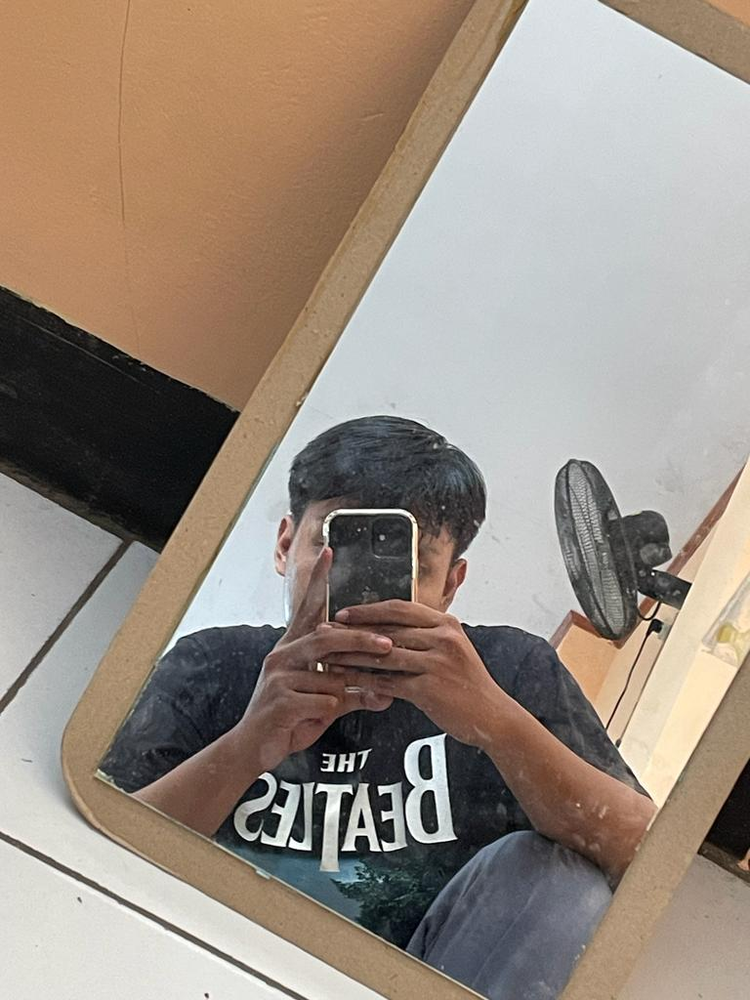

 Gmail
GmailPROFIL
Saya merupakan mahasiswa Program Studi Sistem Informasi di Telkom University dengan minat di bidang analisis data dan pengembangan sistem. Berpengalaman dalam pengolahan data serta pembuatan ERD, UML, dan BPMN untuk merancang proses bisnis. Terbiasa bekerja dengan detail, berpikir analitis, serta mampu beradaptasi dalam kerja tim maupun secara individu.
PENDIDIKAN
- 2023 - Sekarang: Telkom University Jakarta
- 2020 - 2023: SMAN 4 Karawang
PENGALAMAN
- Program Manajemen Sewa Lapangan Olahraga (Python)
- Memadukan Python dengan database MySQL
- Menerapkan proses CRUD untuk Program Manajemen Sewa Lapangan Olahraga
- Menampilkan data dari setiap Lapangan Olahraga
- Program Manajemen Ticket Wahana (Java)
- Pengembangan Sistem Manajemen Ticketing
- Membuat Alur Sistem Manajemen Ticketing
- Membuat Use Case untuk Sistem Manajemen Ticket
- Membuat UML untuk Sistem Manajemen Ticket
KEMAMPUAN
- 💻 Work system comprehension
- 🎨 Casual Graphic Designer
- ⚡ Fast Learner
- 🗣️ Problem Solving